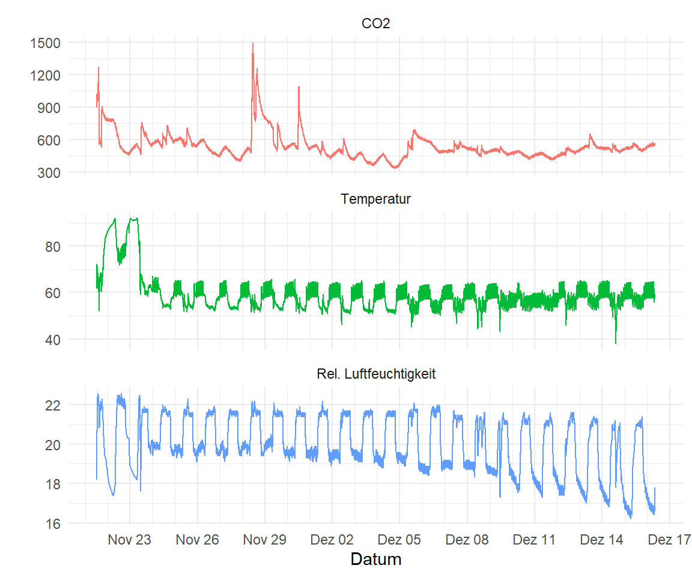
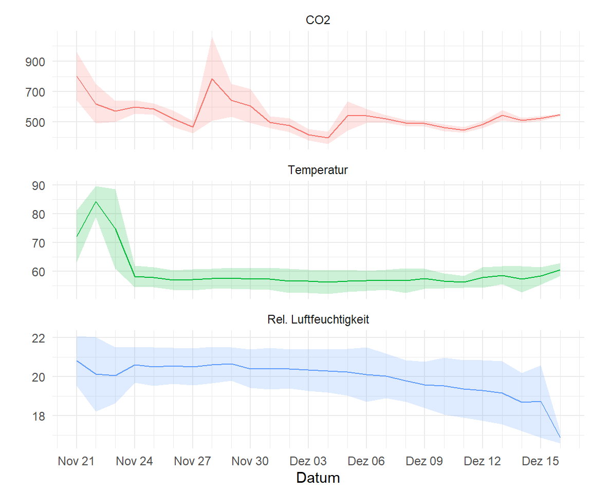
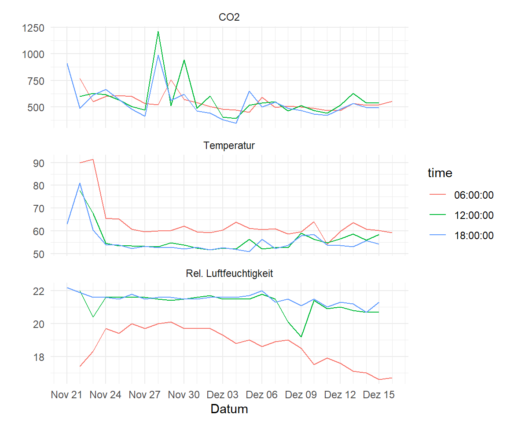

pacman::p_load(tidyverse, magrittr, readxl,
lubridate)11 Daten eines automatischen Loggers
Version vom May 05, 2023 um 20:36:21
Wir wollen folgende R Pakete in diesem Kapitel nutzen.
Die Daten des Loggers liegen in einer Exceldatei ab. Wir haben jede Minute die Konzentration von CO\(_2\), die Temperatur und die relative Feuchte messen lassen. Da wir das Datum in einem ungünstigen Format vorliegen haben, müssen wir der Funktion as_date() die Tage, Monate und das Jahr als Format mitgeben. Wir schreiben '%d.%m.%Y' und meinen damit, dass erst der Tag, dann der Monat und dann das Jahr angeben ist. Getrennt sind die Tage, Monate und Jahre durch einen Punkt. Dann verbinden wir noch die Spalte des Datums mit der Spalte des Uhrzeit und bauen uns daraus eine date_time Spalte. Die date_time Spalte brauchen wir um später für jeden Zeitpunkt die gemessenen Werte darstellen zu können.
log_tbl <- read_excel("data/log_data.xlsx") %>%
mutate(date = as_date(date, format = '%d.%m.%Y'),
date_time = as_datetime(str_c(date, " ", time))) %>%
select(date_time, everything())Insgesamt hat unsere Datei \(n = 35761\) Beobachtungen für die Zeit vom 21. November 2022 bis zum 16. Dezember 2022. Dank unserem Tibble wird nicht die ganze Datei wiedergegeben sondern nur die ersten zehn Zeilen.
log_tbl# A tibble: 35,761 × 6
date_time date time co2 temp relh
<dttm> <date> <chr> <dbl> <dbl> <dbl>
1 2022-11-21 12:30:00 2022-11-21 12:30:00 896 18.2 61.7
2 2022-11-21 12:31:00 2022-11-21 12:31:00 893 18.2 66.3
3 2022-11-21 12:32:00 2022-11-21 12:32:00 893 18.4 67.8
4 2022-11-21 12:33:00 2022-11-21 12:33:00 939 18.6 70
5 2022-11-21 12:34:00 2022-11-21 12:34:00 939 18.8 70.6
6 2022-11-21 12:35:00 2022-11-21 12:35:00 975 19 70.3
7 2022-11-21 12:36:00 2022-11-21 12:36:00 980 19.2 71.6
8 2022-11-21 12:37:00 2022-11-21 12:37:00 986 19.4 71.8
9 2022-11-21 12:38:00 2022-11-21 12:38:00 994 19.5 71.9
10 2022-11-21 12:39:00 2022-11-21 12:39:00 986 19.7 72.2
# ℹ 35,751 more rowsWir immer müssen wir die Daten noch aus dem Wide-Format in das Long-Format überführen. Wir wollen dann auch die Outcomes nochmal anders benennen und machen die Umbenennung gleich bei der Erstellung der Faktoren. Dann sind wir auch schon fertig mit der Datenvorbereitung und können dann mit den Abbilungen beginnen.
log_plot_tbl <- log_tbl %>%
pivot_longer(cols = co2:relh,
names_to = "outcome",
values_to = "rsp") %>%
mutate(outcome = factor(outcome,
labels = c("CO2", "Temperatur", "Rel. Luftfeuchtigkeit"))) In Abbildung 11.1 sehen wir alle Messdaten aufgetragen. Die Zeit für den Plot ist relativ überschaubar und wir erhalten das Ergebnis in wenigen Augenblicken. Daher spricht eigentlich nichts für diese Darstellung über alle Messdaten. Wir sehen, dass die Temperatur am Anfang höher war, als im späteren Verlauf. Auch haben wir einen Peak an CO\(_2\) um den 29. November sowie ein paar Tage später. Die Luftfeuchte zeigt im Laufe der Messungen eine immer höhere Variabilität.
ggplot(log_plot_tbl, aes(date_time, rsp, color = outcome)) +
theme_minimal() +
geom_line() +
facet_wrap(~ outcome, scales = "free_y", nrow = 3) +
scale_x_datetime(date_labels = "%b %d", date_breaks = "3 day",
date_minor_breaks = "1 day") +
theme(legend.position = "none") +
labs(x = "Datum", y = "")
Wir könnten über die summarise Funktion auch die Werte für jeden Tag mitteln und uns die Standardabweichung über den Tag als Wert für die Variabilität wiedergeben lassen.
log_plot_sum_tbl <- log_plot_tbl %>%
group_by(date, outcome) %>%
summarise(mean = mean(rsp),
median = median(rsp),
sd = sd(rsp))In der Abbildung 11.2 plotten wir uns einmal die Mittelwerte für jeden Tag und die entsprechende Standardabweichung als schattierte Fläche. Hier sehen wir sehr schön den Abfall der Luftfeuchte sowie die eher konstante Temperatur ab dem 24. November. Auch wird der Peak in der CO\(_2\) Konzentration etwas ausgeglichen. Wir sehen den Effekt aber immer noch gut.
ggplot(log_plot_sum_tbl, aes(date, mean)) +
theme_minimal() +
geom_line(aes(color = outcome)) +
geom_ribbon(aes(ymin = mean - sd,
ymax = mean + sd,
fill = outcome), alpha = .2) +
facet_wrap(~ outcome, scales = "free_y", nrow = 3) +
scale_x_date(date_labels = "%b %d", date_breaks = "3 day",
date_minor_breaks = "1 day") +
theme(legend.position = "none") +
labs(x = "Datum", y = "")
Abschließend könnten wir uns auch nur gewisse Zeitpunkte anschauen. Wir wollen also zum Beispiel nur die Werte für die Zeitpunkte um 6 Uhr, 12 Uhr und 18 Uhr visualisieren. Dann filtern wir nur diese Zeitpunkte heraus und können diese Zeitpunkte dann als eigenständige Linien einzeichnen.
log_plot_filter_tbl <- log_plot_tbl %>%
filter(time %in% c("06:00:00", "12:00:00", "18:00:00"))In Abbildung 11.3 sehen wir die Verläufe für die Messzeitpunkte um 6 Uhr, 12 Uhr und dann 18 Uhr. Spannender weise fällt um 12 Uhr die Luftfeuchtigkeit am 9. Dezember. Auch sind die Werte etwas anders für jede Uhrzeit. Da ich mich hier nicht auskenne, was wo und wie gemessen wurde, lassen wir das hier mal so stehen.
ggplot(log_plot_filter_tbl, aes(date, rsp, color = time)) +
theme_minimal() +
geom_line() +
facet_wrap(~ outcome, scales = "free_y", nrow = 3) +
scale_x_date(date_labels = "%b %d", date_breaks = "3 day",
date_minor_breaks = "1 day") +
labs(x = "Datum", y = "")